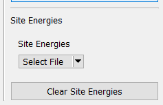
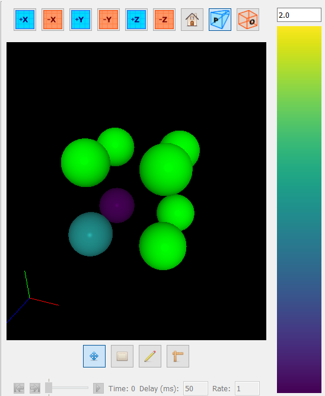

This program supports coloring atoms by some energy value. This is especially useful for viewing the results of a site minimizer simulation. To access it, simply open a CSV file using the "Site Energies" pane on the right side:
 |
Once opened, atoms referenced in the file will be colored by their energy in the viewport. They are colored with the viridis colormap, and the scale can be adjusted using the energy bar on the right of the viewport.
 |
To clear site energies from the viewport, simply click the "Clear Site Energies" button.
A description of the expected file format for site energy files can be found here.